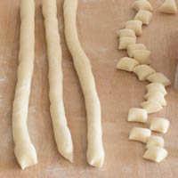

How to make italian gnochi - recipe
-
Wash the potatoes (don't peel them!) and place them in a saucepan. Cover with cold water and bring to a boil.
-
Cook for about 20 minutes after the water has come to a boil.
-
Put the flour on a work surface
-
While the potatoes are still hot, mash them with a potato ricer and add them to the flour.
-
Work the flour into the potato until it becomes a soft, pliable dough (if the dough is too soft add more flour).
-
Roll out the dough into logs about 2 cm (3/4 inch) thick and cut them into pieces.

-
Arrange the gnocchi on a tray dusted with semolina flour
-
To cook the gnocchi, bring a large pot of salted water to the boil and add the gnocchi.
As soon as the gnocchi start floating, they are ready ( usually it takes 2 or 3 minutes)
-
Remove them with a slotted spoon and put them in the pan with the sauce of your choice. Mix well and serve.